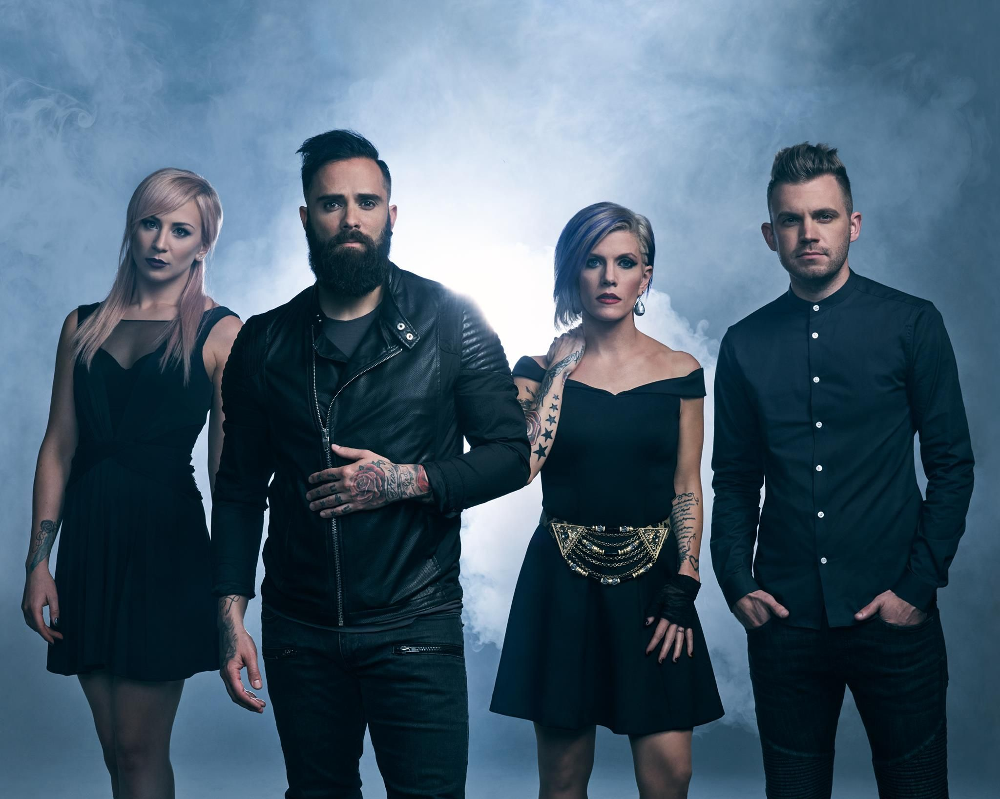
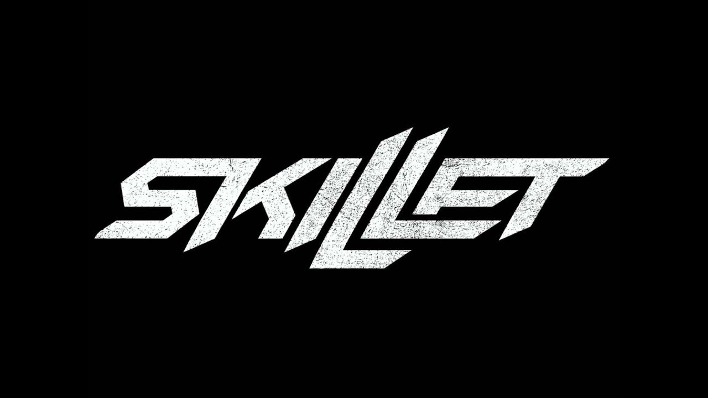

Skillet (ˈskilət) — американская христианская рок-группа из города Мемфис, штат Теннесси, основанная в 1996 году. На данный момент группой выпущено одиннадцать студийных альбомов, четыре EP и два концертных альбома. Состав группы: Джон Купер (бас-гитара, вокал) и его жена Кори Купер (ритм-гитара, клавишные, бэк-вокал), а также Джен Леджер (ударные, бэк-вокал), Сет Моррисон (соло-гитара). За двадцать лет состав группы неоднократно менялся. Джон Купер — единственный участник группы первоначального состава. Альбом Collide в 2005 году был номинирован на премию Грэмми в номинации «Лучший рок госпел альбом», и в 2007 Comatose был номинирован на премию Грэмми за «Лучший рок госпел альбом».

Логотип Группы Skillet
Forgiven
Sick of It
Not Gonna Die
Rebirthing
Whispers in the Dark
Savior
Feel Invincible
Awake and Alive
Hero
Monster